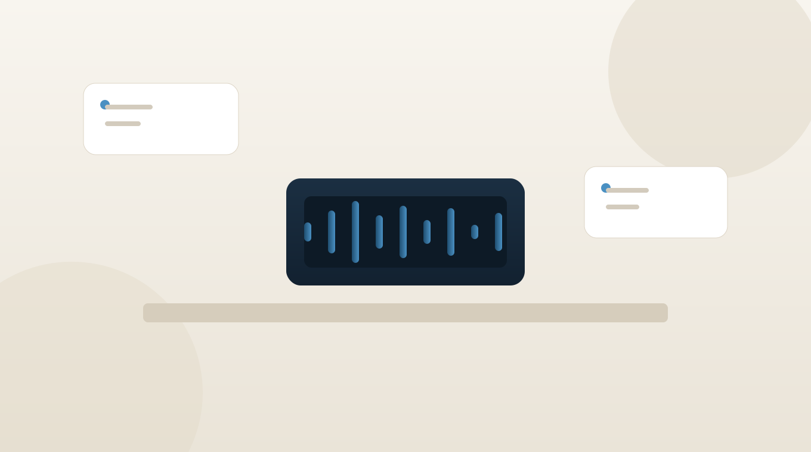

Augustus 2026
AI-receptionist voor bedrijven: 24/7 professioneel, automatisch antwoord
Elke gemiste oproep is een klant die naar de concurrent belt. Hoe een AI-receptionist dat oplost, wat het kost, en hoe de eerste twee weken eruitzien.
Lees meer →